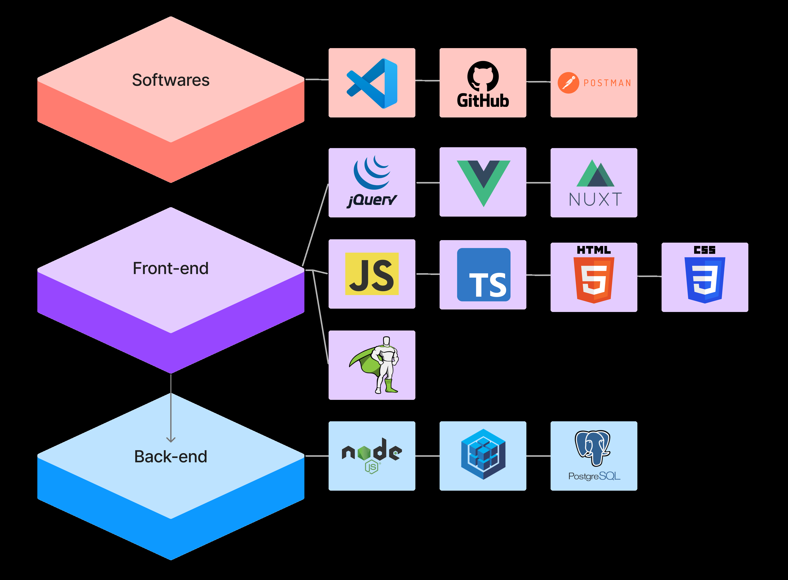

Phan Võ Minh Huy
üòÅ Welcome to my portfolio!
I'm a software developer and I'm interested mostly in web development.
üìú About me
Hello! My name is Huy and I'm from Vietnam. I first started with web development back in 2021 when I decided to build a React app for my graduation project. I had never built a web app before so I was kinda nervous - turns out deciding how the UI/UX should be looked and how the logic works taught me a lot about HTML, CSS, Javascript and SQL.
I had the opportunity to work for a company in Ho Chi Minh City, Vietnam. When I was there, I took part in building 2 web applications called Agora-colearning and Vibe using Javascript frameworks and some third-party applications. I also learned Typescript during the time.
My main focus these days is trying to be a well-rounded software developer. Not only in programming, I'm also trying to learn more about business analyzing as well. I'm reading books which can make me a better developer such as The Pragmmatic Programmer, An Introduction to Algorithms, etc.
üë©üèΩ‚ÄçüöÄ Projects
Agora Colearning - Fullstack Developer
January, 2022 - October, 2022
Agora Colearning is an education hub with a wide range of after school programmes on offer from Singapore's leading education providers.
My responsibility was providing technical solutions, communicating and clarifying requirements with customers, creating estimation/schedule, etc.
Vibe.fyi - Javascript Developer
October, 2022 - December, 2022
Vibe provides visual communication inside organizations to enable a culture to become on a daily basis - something incredibly tangible.
My responsibility was building templates and slides with good animations, communicating and clarifying requirements with customers, creating estimation/schedule, etc.
The best way out is always through
-Robert Frost
üåÆ Work History
TPS Sotware Solutions (January, 2022 - December, 2022)
I was very nervous about this job because this was the first time I had started my career and I worried that I would make mistakes. It turned out making mistakes was expected if you're an intern and you had no experiences whatsoever. I learned a lot from my mistakes during this time and also know how a developer works - it's not just coding but also lots of meetings, plannings, teamworks etc. I also took part in two projects - Agora Colearning and Vibe when I was here.
üèÜ Accomplishments
- Graduated with a Bachelor's degree of software engineering.
- Gold badge in Problem Solving on Hackerrank.
- IELTS 6.5 (definitely better now).
Discipline equals freedom
-Jocko Willink
üöÄ Tech Stack
üëã Contact
- Phone: (+84) 38 7578 517
- Email: huy.phan2210@outlook.com